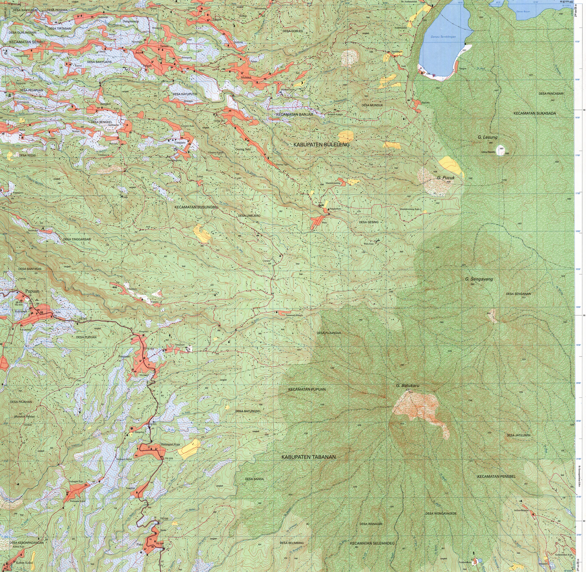

Permukaan elevasi
DEM atau sumber elevasi menentukan tinggi setiap lokasi. Tanpa permukaan elevasi, semua objek tampak berada pada bidang datar.
Tampilan tiga dimensi membantu memperlihatkan bentuk medan dan hubungan vertikal. Penyajian 3D harus tetap mempertahankan skala, sudut pandang, dan simbol yang dapat ditafsirkan secara benar.
DEM atau sumber elevasi menentukan tinggi setiap lokasi. Tanpa permukaan elevasi, semua objek tampak berada pada bidang datar.
Citra, peta dasar, atau simbol tematik ditempatkan di atas permukaan untuk memberi konteks.
Sudut pandang, arah pandang, ketinggian kamera, serta pencahayaan memengaruhi bagian yang terlihat.
| Aspek | Peta 2D | Tampilan 3D |
|---|---|---|
| Sudut pandang | Tegak dari atas dan relatif seragam | Perspektif; bagian depan dan belakang tampak berbeda |
| Pengukuran | Jarak dan arah lebih mudah dibandingkan | Perspektif dapat mengubah kesan jarak dan ukuran |
| Bentuk medan | Dibaca melalui kontur, warna, atau hillshade | Terlihat langsung sebagai permukaan |
| Objek tertutup | Lebih sedikit masalah oklusi | Objek dapat tertutup medan atau objek lain |
| Penggunaan | Referensi, pengukuran, analisis menyeluruh | Komunikasi bentuk medan, perencanaan visual, simulasi |
Eksagerasi vertikal memperbesar perbedaan tinggi agar relief yang halus lebih mudah terlihat. Nilainya harus disebutkan karena dapat membuat lereng tampak lebih curam daripada keadaan sebenarnya.
Skala vertikal dan horizontal setara. Bentuk relief paling mendekati perbandingan geometris sebenarnya.
Perbedaan tinggi diperbesar. Berguna untuk dataran atau relief halus, tetapi berisiko menimbulkan kesan yang berlebihan.

| Model | Permukaan yang diwakili | Catatan penggunaan |
|---|---|---|
| DEM | Istilah umum untuk model elevasi digital; maknanya diperiksa pada metadata. | Analisis medan dan visualisasi. |
| DSM | Permukaan teratas, termasuk bangunan dan vegetasi. | Bentuk kota, kanopi, atau hambatan pandangan. |
| DTM | Permukaan tanah setelah objek di atas tanah dikurangi. | Bentuk medan, aliran, dan perencanaan lahan. |
| TIN | Permukaan dari jaringan segitiga tidak beraturan. | Mempertahankan garis patahan medan dan kepadatan titik berbeda. |
Istilah DEM dan DTM dapat digunakan secara berbeda oleh penyedia data. Metadata menentukan arti, resolusi, datum vertikal, metode pembentukan, dan ketelitian model.
Jika skala horizontal 1:50.000 dan skala vertikal 1:10.000, eksagerasi vertikal = 5×.
Dalam perangkat lunak 3D, satuan horizontal dan vertikal juga diperiksa. Data horizontal dalam derajat dan elevasi dalam meter tidak dapat dibandingkan langsung tanpa sistem koordinat dan konversi yang benar.
Objek dekat tampak lebih besar. Tampilan terasa alami, tetapi perbandingan ukuran dan jarak menjadi kurang langsung.
Ukuran tidak mengecil karena jarak dari kamera. Perbandingan bentuk lebih stabil, tetapi kesan kedalaman lebih lemah.
Puncak, bangunan, atau simbol di bagian depan dapat menutup objek di belakang. Sudut pandang perlu diuji dari beberapa arah.
Sudut lebar memuat area lebih luas, tetapi dapat memperkuat distorsi perspektif di tepi tampilan.